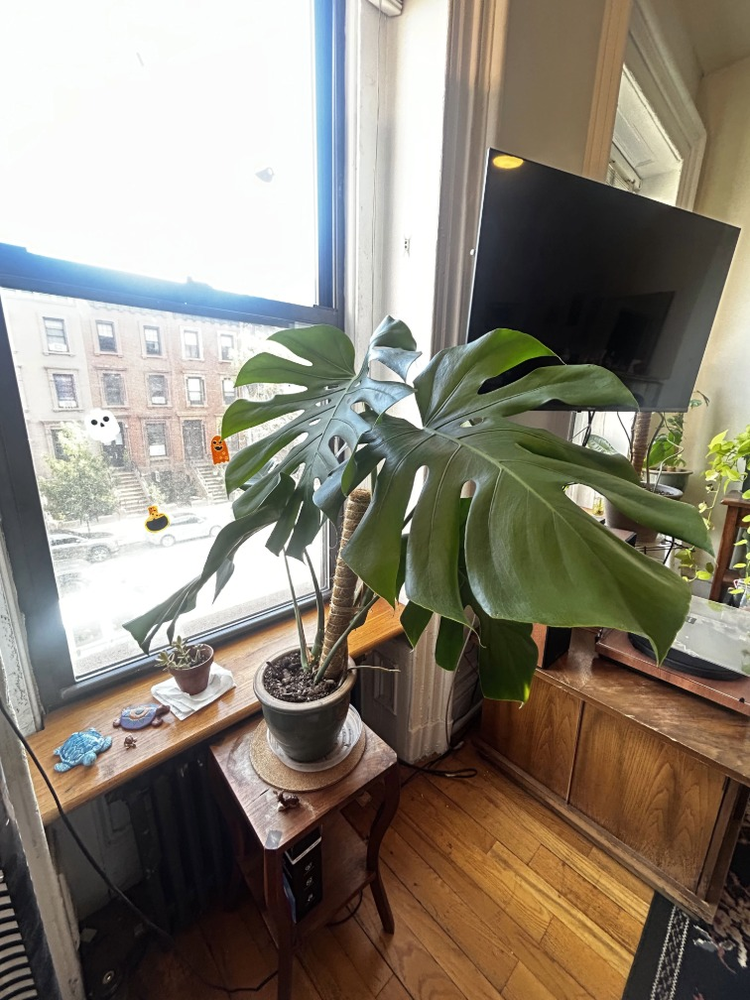
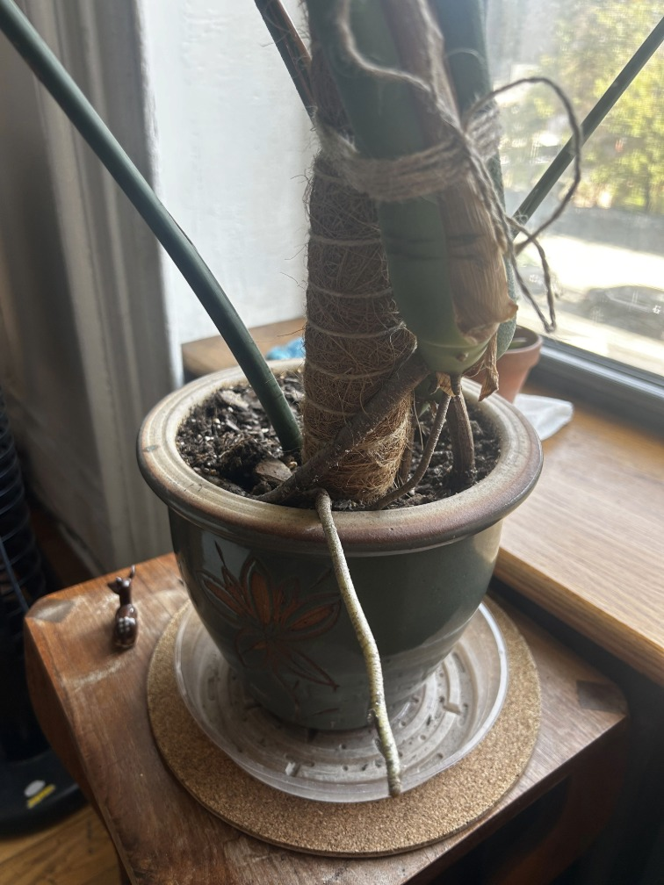

Like philodendrons, there are many different kinds of monsteras. Although, when you think of a monstera, you are probably thinking of a Monstera Delicioisa.
Monstera Deliciosas, also known as the Swiss Cheese Plant, are very popular because they grow to be very large, making them ideal for adding some va-va-voom to your space. They have signature heart-shaped leaves with holes, hence the "swiss cheese."
Additionally, these plants are not too difficult to take care of, although they require more maintenance than a typical philodendron or cactus.
 |  |